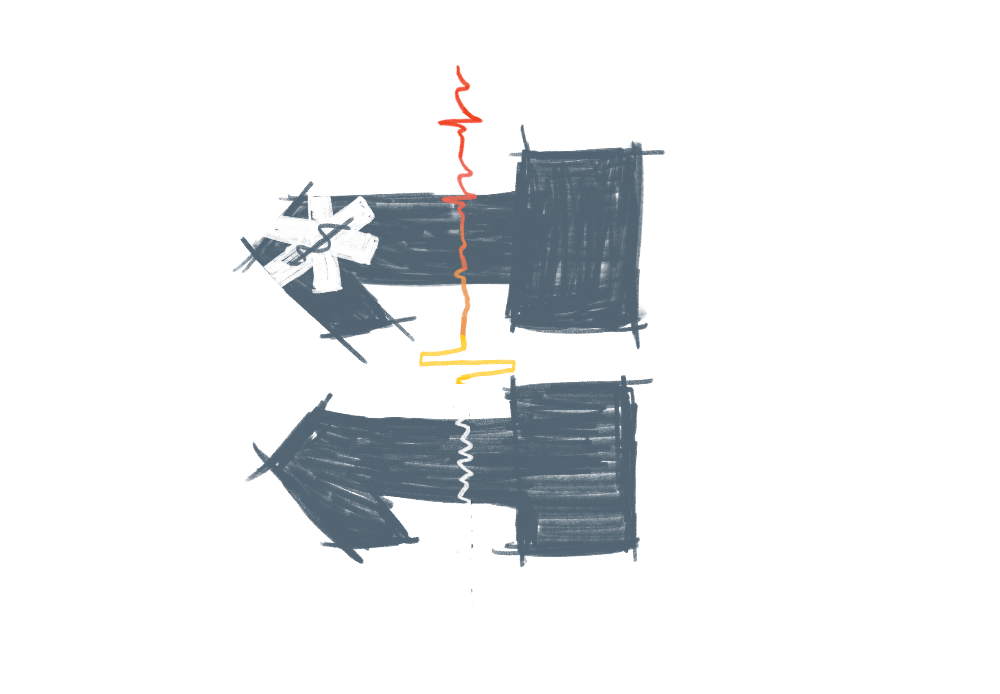

ACLS Timer Tool
Male
Female
Y
Epinephrine:
0
Amiodarone:
0
Lidocaine:
0
Shock:
0
RR
HR
BP
/
SpO₂
→
%
BT
°C
主訴
病史/過敏史
其他處置/說明
CPR
AED Analyze
Switch CPR
⚡️⚡️Shock⚡️⚡️
Stop CPR
Epinephrine
Amiodarone
Lidocaine
I.V.
I.O.
Endo
低體溫
缺氧
低血容
酸鹼問題
高低血鉀
冠狀動脈血栓
肺動脈栓塞
中毒
張力性氣胸
心包膜填塞
ROSC
ISBAR
Reset
請選擇 Fix 長度：
19
20
21
22
23